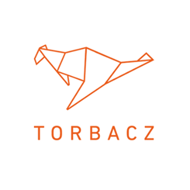

Wykształcenie
2009-2013
Politechnika Gdańska
Wydział Inżynierii Lądowej i Środowiska
Kierunek: Geodezja i Kartografia
(studia inżynierskie)
2011-2012
Politechnika Gdańska
Wydział Zarządzania i Ekonomii
Kierunek: Zarządzanie
Specjalizacja: Zarządzanie wiedzą i informacją
(studia
magisterskie)
2007-2011
Politechnika Gdańska
Wydział Zarządzania i Ekonomii
Kierunek: Zarządzanie
Specjalizacja: Inżynieria Systemów Produkcji
(studia
inżynierskie)
Doświadczenie
 03.2018 - 05.2018
03.2018 - 05.2018
infoShare Academy
Junior Front-end Developer
 06.2014 - 06.2016
Torbacz sp. z o.o.
Inżynier ds. produkcji